The brief
Design and create a uniquely shaped whistle
The project goal was to design and manufacture a uniquely shaped whistle capable of producing a frequency from its tone.
Concept development
From pendant to fish
Initial ideation explored many directions including pendants, sliders, a referee whistle. However, the first real design was an oval pendant whistle. Prototyping revealed no sound could be produced from that form, so the design was abandoned in favour of something more acoustically viable.
Prototyping played a big role in deciding the final design. It forced me to set aside my attachment to an idea and go down a different route entirely."
The fish concept came from a conversation where someone mentioned a koi fish. Research into how whistles work, specifically the fipple mechanism, led to a flat fish profile that could house the internal cavity and mouthpiece geometry needed to actually produce sound. Workholding tabs were designed into the part from the start since they suited the flat organic shape.
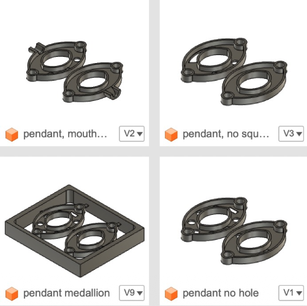
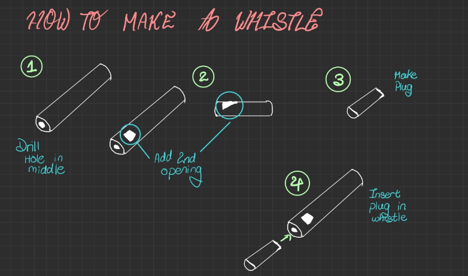
CAD & CAM
Designing for machinability
The fish was designed flat so all internal geometry, the whistle cavity and mouthpiece pocket, could be CNC-machined. The pocket feature was used for all internal geometry and the contour operation generated the filleted exterior profile.
Three setups were required: the first was to make the hole for the fipple, the second machined the main face and internal cavity, and the third flipped the part to machine the reverse face.
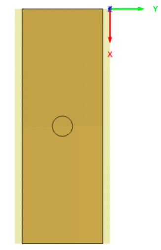
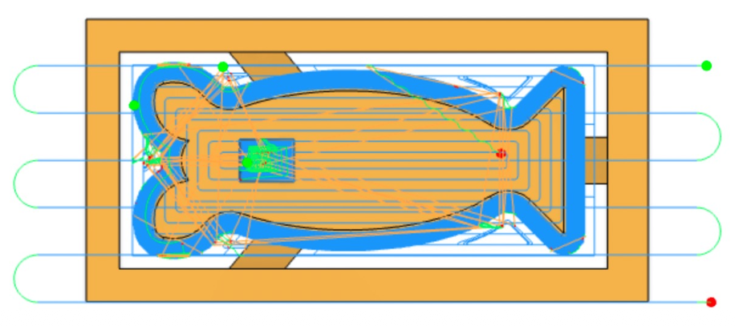
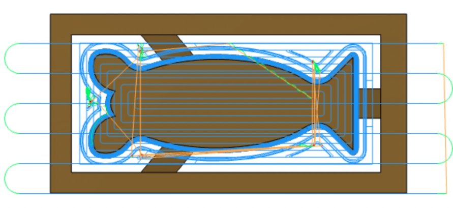
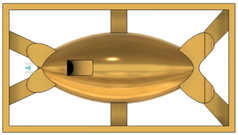
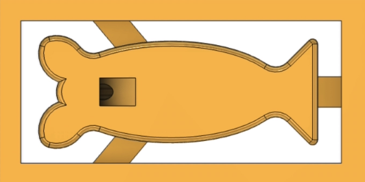
Manufacturing
CNC Machining
After milling the stock down to the required dimensions, three setups were used for machining and the part was flipped twice. The fipple plug was turned on the lathe separately and hand-filed to its final semicircular cross-section since the small size made milling impractical.
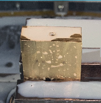
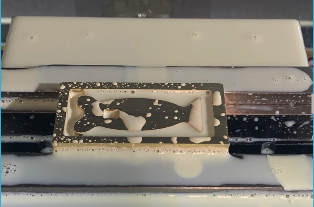
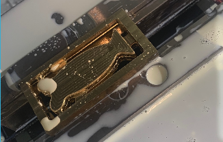
Stock preparation
Brass stock was milled down to required dimensions before CNC operations.
CNC machining — 3 setups
The main face, internal whistle cavity and mouthpiece pocket machined using pocket and contour operations. The part was flipped twice for a symmetrical finish.
Total machine time ~1hr 33min
Fipple — lathe + hand file
The cylindrical fipple plug was turned on the lathe. The semicircular geometry was achieved by filing by hand.
Tab removal & finishing
Workholding tabs were removed with a hacksaw, then filed and sanded down to reveal the true fish profile. A belt sander and sandpaper were used for the final surface finish.
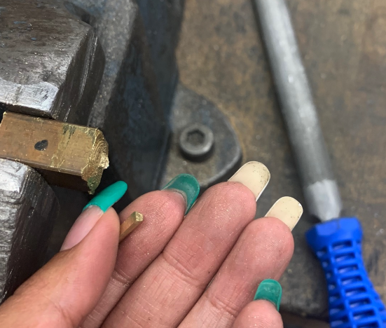
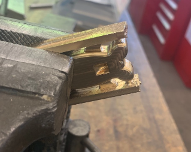
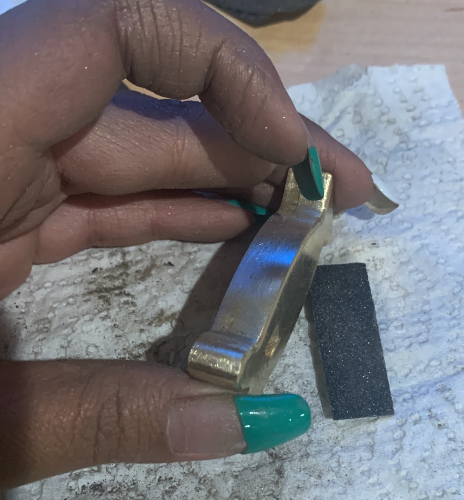
Final result
A working brass fish whistle
The finished whistle produces a clear tone. Both faces show the fish profile cleanly, with the fipple mouthpiece inset into the head of the fish and the internal cavity running the length of the body.

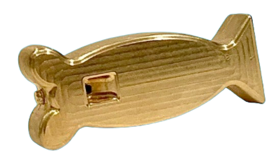